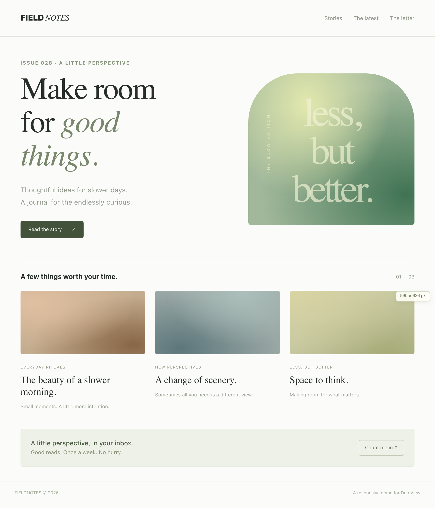
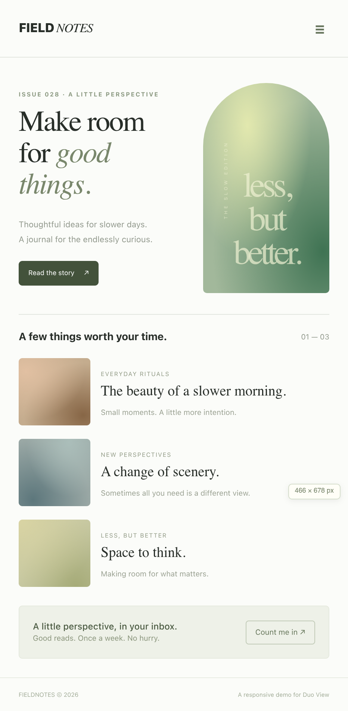

GOOD
DESIGN
OPENS UP.
Your website has another side.
Meet it on a screen that folds.

The web isn’t standing still.
Neither should your preview.
Small screen. Big canvas. Something in between. Duo View lets you explore responsive design beyond the familiar rectangle.
Bring a website. Find a fresh angle.
Meet the simulatorSAME SITE.
NEW RULES.
Open it up. Turn it sideways. See what shifts, what holds, and what could be better.
Compare the views
Made to play.
A streaming demo with real playback controls. Fold it into tabletop mode and settle in.
A shared point of view.
Keep the page, the pose, and the perspective in one link. Share it from the simulator.
Take the shape with you.
Download the original 3D model, complete with its folding animation. Make something of it.
GOOD
QUESTIONS.
So, what exactly is Duo View?
A free, independent responsive website preview. Explore an illustrative foldable iPhone Duo in 3D, compare layouts, and share your perspective. It works in your browser, with no account required.
Will my website work in it?
Paste your URL in the simulator. Sites that permit embedding can be interactive in the flat view. When a public site blocks embedding, Duo View can show a scrollable snapshot captured by Microlink. Snapshots don’t support links, video, or your signed-in session.
Is this the real device?
No. It’s an independent illustrative model, not official Apple hardware or a Safari emulator. Preset dimensions are estimates and can be edited. Use it to explore layouts, then validate on real devices.
OPEN UP
TO WHAT’S NEXT.
Your website. A fresh perspective.
Launch Duo View